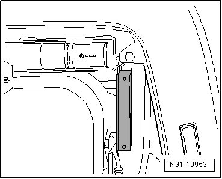
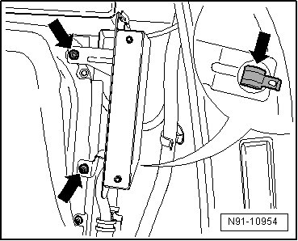
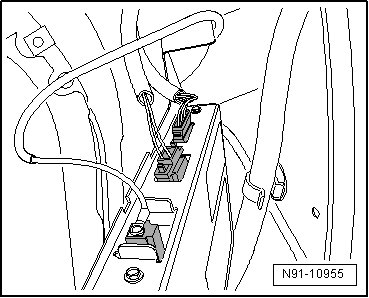

Digital Satellite Radio Tuner
Digital Satellite Radio Tuner
The digital satellite radio tuner is installed in the side trim in the right rear of the luggage compartment.

Removing
Before starting repair work, perform the following:
- Switch off ignition, switch off all electrical consumers and remove ignition key.
The SDARS tuner is removed together with the bracket.
- Loosen both screws behind the insulating material - arrows -.
- Loosen the clip from the bracket - arrow -.

- Tip the bracket with the SDARS tuner forward and disconnect the connectors.

- Now disconnect the bracket from the SDARS tuner by loosening the retaining clip.
Installing
- Install in reverse order of removal.
- Check the SDARS tuner setting and code it accordingly, --> Owner's Manual.